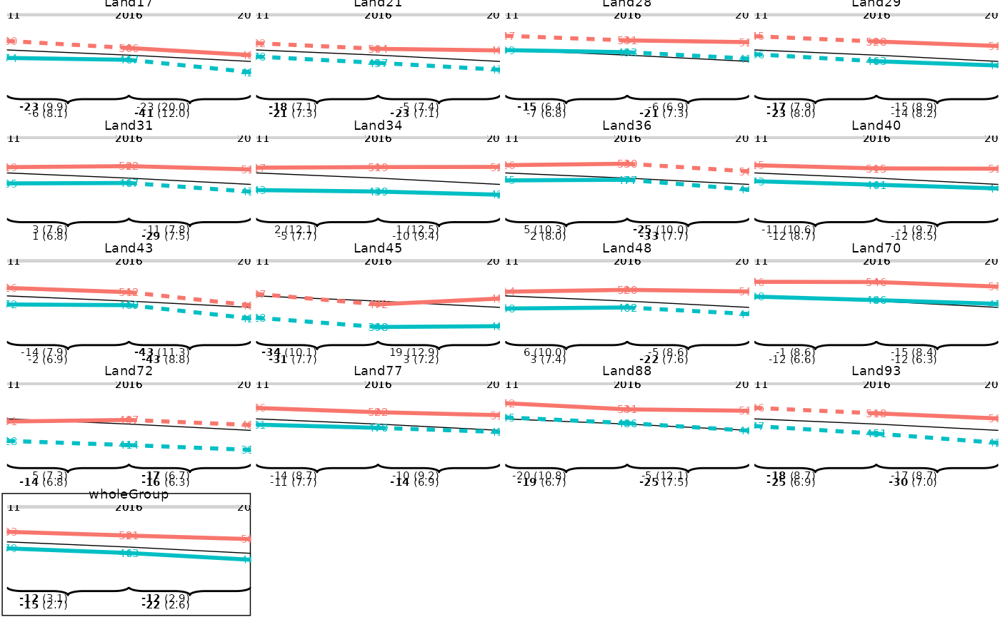
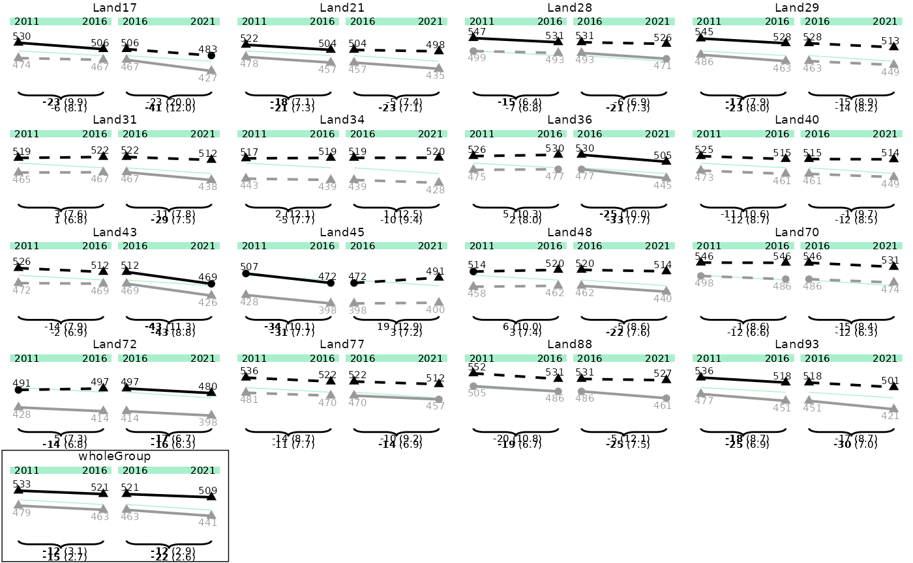
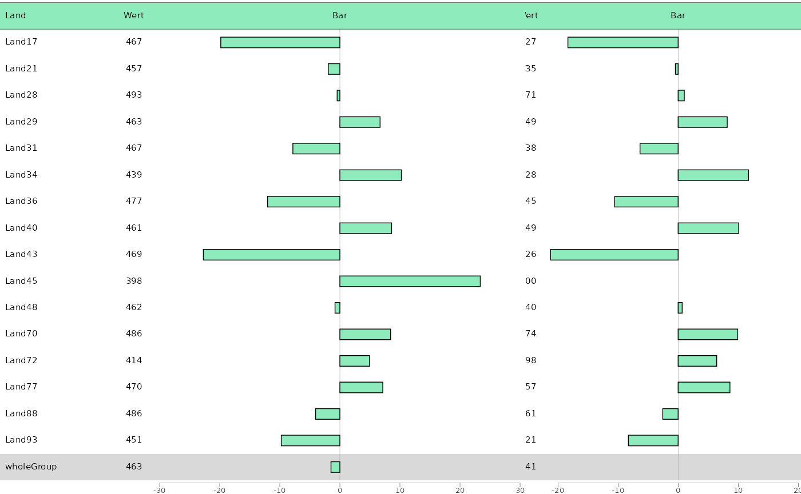

Getting Started
getting_started.RmdeatPlot takes output dataframes from eatRep
and facilitates the construction of different ggplot2-plots
for the data. Main goal is the plotting of BT22 graphs, but in general
the package can be used for other purposes as well. The packages aim is
it to make the plotting as easy but flexible as possible, so let’s dive
right in!
Basic workflow
Data preperation
The first step is the data preperation. This is handeled by the
function prep_plot():
dat_plot <- prep_plot(trend_books,
competence = "GL",
grouping_vars = "KBuecher_imp3"
)The only thing that needs to be done in this step is to define the columns in your data set (here named “trend_books”), if they differ from the defaults, so the function knows which on is which.
The result is a list consisting of different dataframes, each dataframe containing the prepared data for a different plot type. Normally, you don’t have to look at this list, but in some cases you might want to edit the data by hand to fit your purpose.
This concludes the basic data preperation workflow. Consult
vignette("data_preperation") or prep_plot()
for further information.
Plotting
Different predefined plottypes stemming from the BT22 graphs are
available. In general, the eatPlot-functions can also be
combined to create additional plots, however, the functions have been
optimized in regards to the BT22-needs. Each plot function consists of
two parts:
- The function arguments, which mainly specify the data columns that should be plotted.
- An additional argument called
plot_settings, which takes a plotsettings function, used for specifying graphical features like colours, font sizes etc.
Plot settings
Plot settings can be defined by a list with a specific format, which
is generated by plotsettings_lineplot() or
plotesettings_tablebarplot(). Additionally, multiple
default lists for different plot types have already been built and are
included within eatPlot. See
vignette("plot_settings") for further instructions on
altering your own plots.
Lineplots
Lineplots are plotted using the plot_lineplot()
function. Input data is the list of data.frames prepated by
prep_plot().
plot_lineplot(dat_plot,
years_lines = list(c(2011, 2016), c(2016, 2021)),
years_braces = list(c(2011, 2016), c(2016, 2021))
) As we can see, the lineplot doesn’t look optimal yet. However, we can provide the predefined plotsettings-list to get the anticipated result:
p1 <- plot_lineplot(dat_plot,
years_lines = list(c(2011, 2016), c(2016, 2021)),
years_braces = list(c(2011, 2016), c(2016, 2021)),
plot_settings = lineplot_4x4
)
p1
The plots might still look a bit distorted, as they are optimized for
the saved pdf file. You can save the plot by using
save_plot():
save_plot(p1, filename = "./p1.pdf")This already sets the correct widths and heights for the final output.
Tables and barplots
As often both tables and barplots need to be combined to the same
plot, the function plot_tablebar() is responsible for both
operations.
The function takes either the whole list-object generated by
prep_plot() or the according dataframe
plot_tablebar. This way, you can extract and edit the
plot_tablebar dataframe yourself.
When we have cleaned our data, we can plot a tablebarplot by providing variables that should be plotted as table columns, as well as the headers, and default settings (if needed).
dat_plot <- subset(dat_plot$plot_tablebar, grouping_var == 0)
bartable_1 <- plot_tablebar(
dat = dat_plot,
bar_est = "est_Trend_Comp_crossDiff_wholeGroup_20162021",
bar_header = "Wert",
columns_headers = list("Land", "Wert"),
columns_table = c("state_var", "est_noTrend_noComp_2016"),
y_axis = "state_var",
plot_settings = plotsettings_tablebarplot(
axis_x_lims = c(-30, 30),
columns_alignment = c(0, 0.5),
columns_width = c(0.2, 0.1, 0.7),
default_list = barplot_plot_frame
)
)Note that we have to change the column alignment here, so the column values are aligned correctly, and that we have to change the column width, if we don’t want all columns to have the same size.
Combining tables and barplots
Currently, eatPlot only supports the generation of a
table with the desired number of columns, and one barplot on the right
side of the table. For very complex plots, different plots have to be
combined to achieve the desired output.
bartable_2 <- plot_tablebar(
dat = dat_plot,
bar_est = "est_Trend_Comp_crossDiff_wholeGroupSameGroup_20162021",
bar_header = "Wert",
columns_headers = list("Wert"),
columns_table = c("est_noTrend_noComp_2021"),
y_axis = "state_var",
plot_settings = plotsettings_tablebarplot(
axis_x_lims = c(-20, 20),
columns_alignment = 0.5,
columns_width = c(0.2, 0.8),
default_list = barplot_plot_frame
)
)Sometimes the alignment of the columns can be a bit tricky, than you
have to play around with the columns_alignment,
columns_width and columns_nudge settings.
The two plots can be combined into one by
combine_plots():
combine_plots(list(bartable_1, bartable_2))
#> Warning: Removed 2 rows containing missing values (`geom_rect()`).